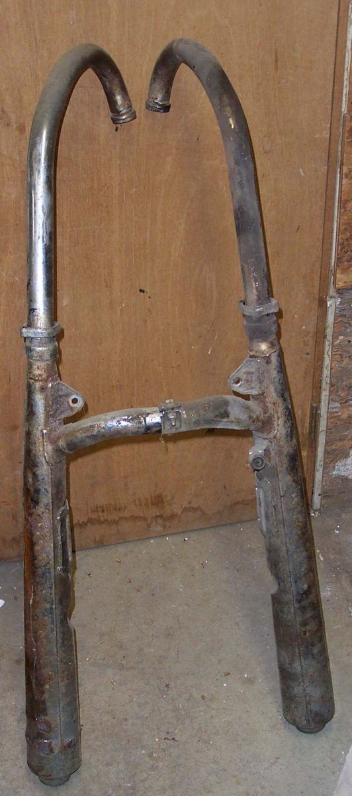
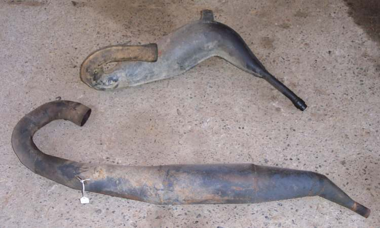
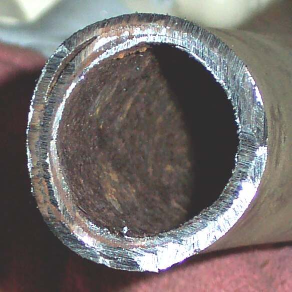
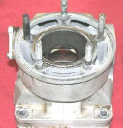

The exhaust carries burnt gas from the cylinder head to the back of the bike. It has a header pipe bolted to the head, a silencer (muffler) at the end and, on newer bikes, a catalytic converter and an oxygen sensor in the header. Two-strokes use a fat expansion chamber that is tuned to the engine.
What it does
The exhaust lets the engine breathe out, cuts noise, and on newer bikes cleans the gas: the catalytic converter burns leftover fuel and carbon monoxide. The pipe and silencer rust from the inside, mounts crack from vibration, and carbon builds up, especially on two-strokes and engines that burn oil. A melted or blocked catalyst chokes the engine.
Signs it is worn or failing
- Many modern two-stroke engines have a power valve in the exhaust port. Carbon makes it stick and the engine goes flat at one end of the rev range: Two-stroke is weak at one end of the rev range.
- Exhaust much louder or rattling.
- Ticking or puffing from a leak and popping on overrun.
- Pipe glows red or catalyst overheats: stop the engine.
- Low power from a blocked silencer or catalyst, or a blocked two-stroke exhaust.
When to replace it
When it is rusted through, cracked, or the catalyst is broken or blocked. Two-stroke pipes can often be cleaned: Decarbonise a two-stroke exhaust.
What to match when buying
- Match make, model and year. A wrong pipe changes power and fuel use, and on injected bikes can trip the warning light.
- On bikes sold with a catalyst, buy a part with one. The K-Light silencer carries approval marks; many countries require a marked, legal silencer.
- Loud "free-flow" silencers and removed baffles are often illegal and can make the engine run lean and hot.
Fitting notes
- The exhaust stays hot long after the engine stops; let it cool before touching.
- Always fit a new exhaust gasket. Fit all bolts loosely, tighten the header first, then the silencer mount.
- Home job: Find and fix an exhaust leak, Check exhaust mounts and heat shields.
- Steam from burnt fuel condenses inside the pipe and rusts it from within. Chrome can hide the holes.
Reference (K-Light 125)
| Item | Value | PDF page |
|---|---|---|
| Muffler mounting bolt | 22 to 29 N·m | 106 |
| Header joint (connector) bolt | 5 to 9 N·m | 106 |
| Inspection | every service | 51 |